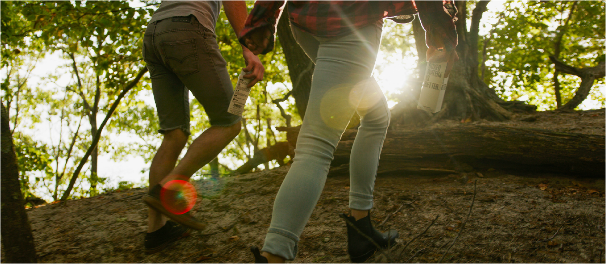
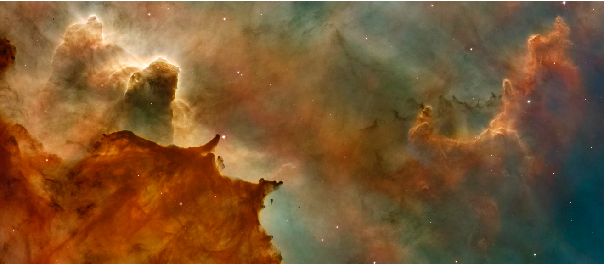
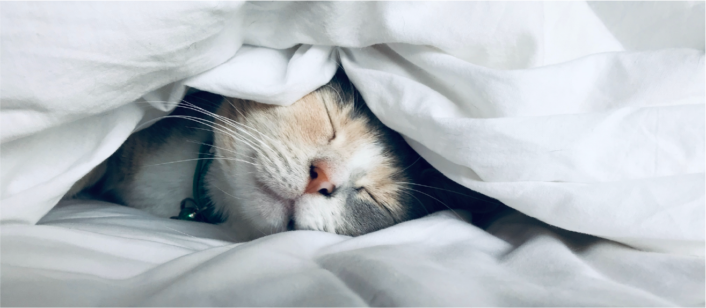
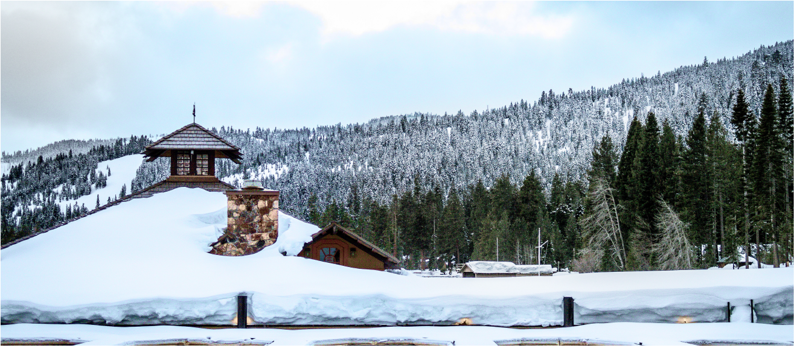

NS Reisverhalen
Opgeslagen
Mijn NS
Opgeslagen
Mijn NS
Verhaal zoeken
Zoeken
Zoeken
Tijd
0-5 min
5-10 min
10-15 min
15-20 min
Populariteit
Best beoordeeld
Meest gelezen
Alfabetisch
A-Z
Z-A
Genre
Liefde
Detective
Science Fiction
Thrillers
Humor
Filter & Sorteer
Tijd
0-5 min
5-10 min
10-15 min
15-20 min
Populariteit
Best beoordeeld
Meest gelezen
Alfabetisch
A-Z
Z-A
Genre
Liefde
Detective
Science Fiction
Thrillers
Humor
Verder lezen
Alwetende verteller
Verhalen
Alwetende verteller

Presentator die ten onrechte denkt aansluiting te hebben gevonden bij ‘de kids’

De verwarde man
De Cock en het raadsel van het verdwenen boek

Toeristische route

Ollekebolleke
 Mijn NS
Mijn NS